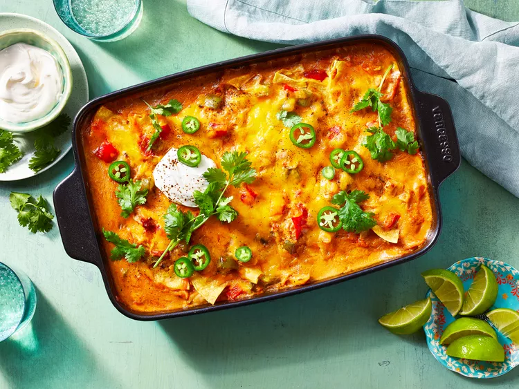

King Ranch Chicken Casserole

Description
This classic King Ranch chicken casserole is bursting with chicken, corn tortillas, tomatoes, peppers, and cheesy goodness. From
what I hear, it's impossible to go to any sort of potluck in Texas and not see one of these.
Ingredients
- 1 tablespoon vegetable oil
- 1 medium white onion, diced
- 1 medium red bell pepper, diced
- 1 medium green bell pepper, diced
- 1 (10.5 ounce) can condensed cream of mushroom soup
- 1 (10.5 ounce) can condensed cream of chicken soup
- 1 (10 ounce) can diced tomatoes with green chile peppers (such as RO*TEL®)
- 1 cup chicken broth
- 2 tablespoons sour cream
- 2 teaspoons ground cumin
- 1 teaspoon ancho chile powder
- ½ teaspoon dried oregano
- ¼ teaspoon chipotle chile powder
- 1 (3 pound) cooked chicken, torn into shreds or cut into chunks
- 1 (8 ounce) package shredded Cheddar cheese
- 10 (6 inch) corn tortillas, cut into quarters
Steps
- Step 1
Preheat the oven to 350 degrees F (175 degrees C).
- Step 2
Heat oil in a large skillet over high heat. Saute onion and bell peppers in the hot oil until warmed through, about 2 minutes.
Transfer to a large bowl.Step 3
Add both cans of condensed soup, diced tomatoes with chile peppers, chicken broth, sour cream, cumin, ancho chile powder,
oregano, and chipotle chile powder; mix until sauce is well-combined.
- Step 4
Spread a few tablespoons of sauce in the bottom of a 9x13-inch baking dish. Layer with 1/2 of the chicken, 1/2 of the sauce, 1/2
of the Cheddar cheese, and 1/2 of the tortillas.
- Step 5
Spread the remaining chicken over the tortillas. Spread all but 1/2 cup of the remaining sauce over the chicken, then top with
another 1/3 of the Cheddar, and the remaining tortillas. Spread the remaining 1/2 cup over top, and sprinkle with the remaining
Cheddar.
- Step 6
Bake casserole in the preheated oven until bubbling, about 40 minutes.
- Step 7
Turn on the broiler and broil until the top is golden, 2 to 3 more minutes.
- Step 8
Serve hot and enjoy!
Back To Homepage
Back To Top